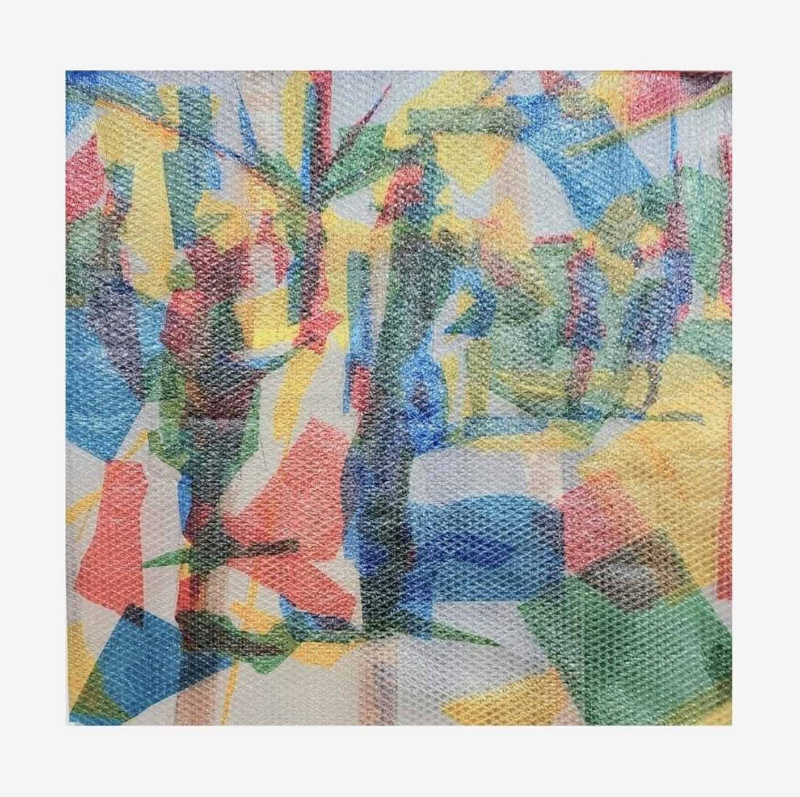

과정_초점
2022.10
Cellophane on bubble wrap
95x95cm

길을 걸으며 어떠한 것에 집중하게 되면, 다른 부분은 자연스럽게 흐릿하게 보이게 된다.
초점을 흐리면, 선명하게 보이던 형태는 단순한 색과 면으로만 인식하게 된다.
반대로 특정한 대상에 관심을 두고 자세히 보면, 그 대상을 더욱 섬세하게 바라보게 된다.
나는 이러한 인식 과정에 주목하여, 처음에는 색과 면으로 느껴지다가 점차 형태가 드러나며
결국 그것이 무엇인지 인식하게 되는 경험을 탐구해 보고자 했다.